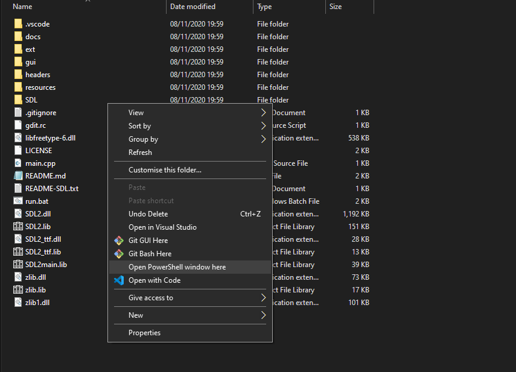

Requirements
- Windows 10 (Should work Windows 7 or higher)
- 32-bit
- At least 2gb of RAM (More highly recommended)
Development version
- Download the project
- Unzip in location of choice
- Navigate to folder in command line
- Run ./run.bat c
- You're done! :)
